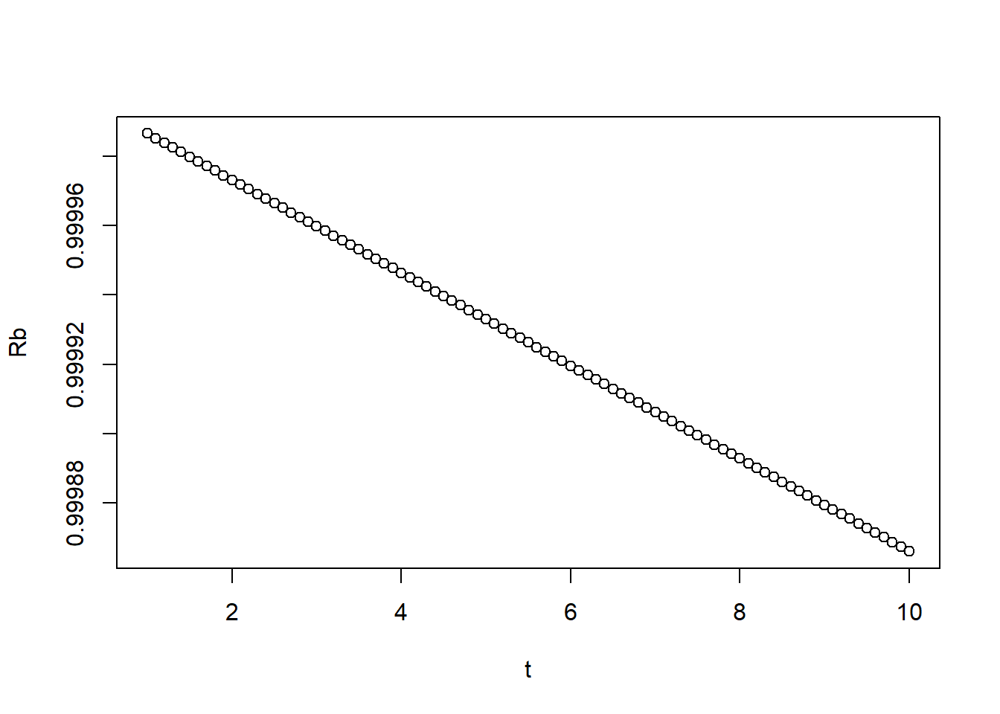

Capítulo 4 Visualização e Análise gráfica na Ciência de dados
Como foi visto no ??, tabela é uma forma poderosa de estruturar e visualizar informações. No entanto, quando trabalhamos com enormes tabelas com uma imensa quantidade de linhas e colunas se torna difícil interpretar suas informações, não importa o quão organizadas elas estejam. Às vezes, é muito mais fácil interpretar essas informações através de gráficos do que por números e é isso que será ensinado no decorrer deste capítulo.
A
Falar da importância de gráficos aqui …
Como objeto de estudo será usado dados de turismo da cidade de Salvador
teste de commit
Alguns detalhes como colocar uma {#label}
para se referir de forma automática
a uma seção ou capítulo
é feito de maneira de forma simples.
Depois de incluída a label
podemos citar a referida seção ou capítulo
do comando pelo comando 2.
Figuras e tabelas com títulos podem
ser inseridas pelos respectivos ambientes
figure e table.

Figura4.1: Comportamento da pressão.
A forma de se referir pela figura é através
do label do chunck no qual foi produzida
com prefixo fig:, e.g., ver Figura 4.1. De forma similar,
você pode se referir a tabelas geradas por knitr::kable(), e.g., ver Tabela 4.1.
| Sepal.Length | Sepal.Width | Petal.Length | Petal.Width | Species |
|---|---|---|---|---|
| 5.1 | 3.5 | 1.4 | 0.2 | setosa |
| 4.9 | 3.0 | 1.4 | 0.2 | setosa |
| 4.7 | 3.2 | 1.3 | 0.2 | setosa |
| 4.6 | 3.1 | 1.5 | 0.2 | setosa |
| 5.0 | 3.6 | 1.4 | 0.2 | setosa |
| 5.4 | 3.9 | 1.7 | 0.4 | setosa |
| 4.6 | 3.4 | 1.4 | 0.3 | setosa |
| 5.0 | 3.4 | 1.5 | 0.2 | setosa |
| 4.4 | 2.9 | 1.4 | 0.2 | setosa |
| 4.9 | 3.1 | 1.5 | 0.1 | setosa |
| 5.4 | 3.7 | 1.5 | 0.2 | setosa |
| 4.8 | 3.4 | 1.6 | 0.2 | setosa |
| 4.8 | 3.0 | 1.4 | 0.1 | setosa |
| 4.3 | 3.0 | 1.1 | 0.1 | setosa |
| 5.8 | 4.0 | 1.2 | 0.2 | setosa |
| 5.7 | 4.4 | 1.5 | 0.4 | setosa |
| 5.4 | 3.9 | 1.3 | 0.4 | setosa |
| 5.1 | 3.5 | 1.4 | 0.3 | setosa |
| 5.7 | 3.8 | 1.7 | 0.3 | setosa |
| 5.1 | 3.8 | 1.5 | 0.3 | setosa |
Você pode fazer citações, nós estamos usando o pacote bookdown (Xie 2020) neste livro de amostra, o qual foi compilado por R Markdown e knitr (Xie 2015).
4.1 Analisando o uso de chunks
4.1.1 Chunk - Condição padrão
A condição default do rmarkdown é a execução do código, apresentação do código e do resultado do processamento.
Criaremos inicialmente uma função no R markdown:
.
Em seguida, aplicaremos esta mesma função em um chunck:

Como observado acima, os códigos e resultados são apresentados.
4.1.2 Aparecer código e sem executá-lo
Nesta seção utilizaremos a opção eval=FALSE, assim o código será apresentado sem executá-lo, ou seja, não haverá resultados.
.
Em seguida, aplicaremos esta mesma função em um chunck:
4.1.3 Executar código sem apresentá-lo
Nesta seção utilizaremos a opção echo=FALSE, assim o código será apresentado sem executá-lo, ou seja, não haverá resultados.
.
Em seguida, aplicaremos esta mesma função em um chunck:

References
Xie, Yihui. 2015. Dynamic Documents with R and Knitr. 2nd ed. Boca Raton, Florida: Chapman; Hall/CRC. http://yihui.org/knitr/.
Xie, Yihui. 2020. Bookdown: Authoring Books and Technical Documents with R Markdown. https://CRAN.R-project.org/package=bookdown.